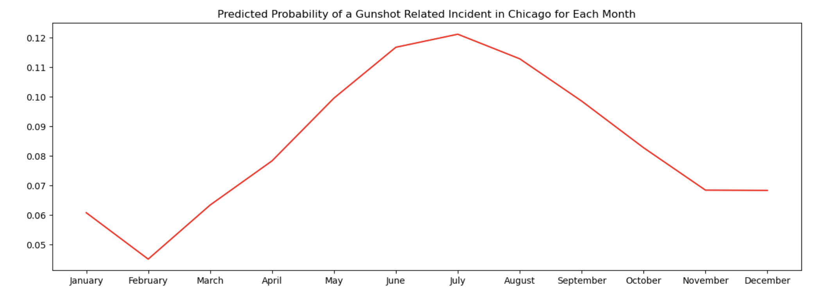
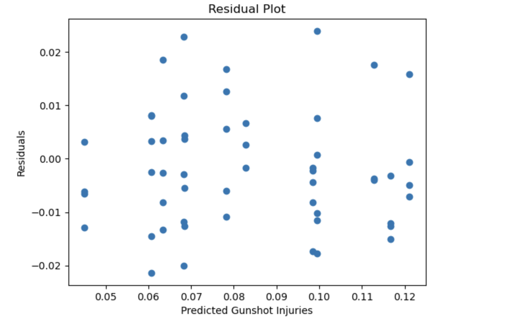

Crime in Chicago
Gun violence remains a critical issue in the United States, with 118 daily deaths in 2023 and Americans facing a gun-related death rate 25 times higher than other high-income countries. This project focuses on Chicago, a city with notably high levels of gun violence, recording 2,684 shooting victimizations in 2023 alone. The research investigates trends in Chicago gun crime from 2010 to 2023, analyzing how factors such as racial composition, educational attainment, age, sex, and geographic location relate to its prevalence. Data from the Chicago Data Portal on gunshot injuries, crime categories, and locations were combined with over eight Chicago Public Schools datasets to explore the relationship between educational outcomes and violent crime. By examining these variables together, the study aims to provide a comprehensive understanding of gun violence determinants in Chicago and offer insights on targeting resources to high-risk neighborhoods. All data used are publicly available through the City of Chicago’s Data Portal, established in 2012 to enhance access to government data
The data cleaning process was complex and involved multiple steps. Initially, all raw datasets were imported. The main gun violence dataset was standardized by normalizing category labels, separating datetime fields, and removing irrelevant columns. Eight school datasets spanning different years were then preprocessed, requiring extensive standardization due to inconsistent column names and varied performance metrics. To create comparable measures across datasets, manual rankings were developed by averaging test scores and other key metrics such as family involvement and educational attainment. These rankings were standardized by zipcode. This approach enabled a unified performance metric for analysis. Detailed procedures can be found in the data cleaning notebook. 

Tools & Methods
- Python (pandas, numpy, statsmodels, matplotlib)
- Structured Query Language
- Exploratory Data Analysis
- Data Cleaning, Merging, & Filtering
- Advanced Regression Analysis
Additional Contributors
- Abhay Gupta
- Emily Fu